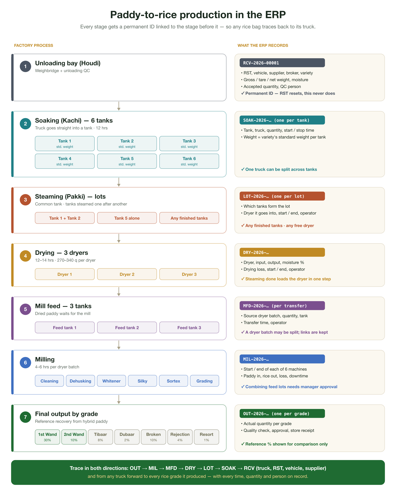
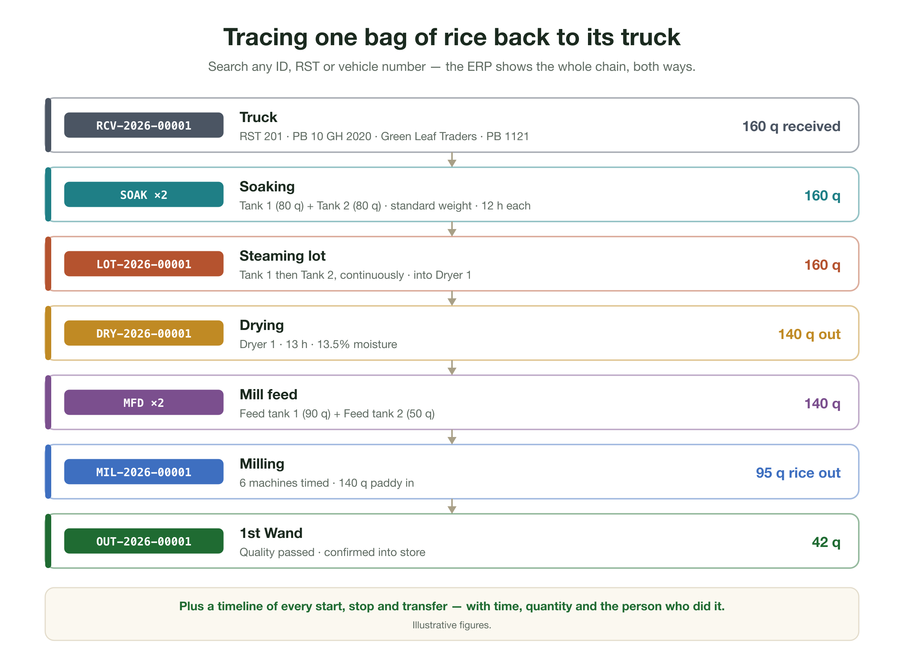

<title>SRS Truck-to-Rice Traceability</title>
<meta name="claude:viewport-fit-sides" content="cover">
<link rel="preconnect" href="https://fonts.googleapis.com">
<link rel="stylesheet" href="https://fonts.googleapis.com/css2?family=Nunito:wght@400;600;700;800&family=JetBrains+Mono:wght@500;700&display=swap">
<style>
/* Layout: one readable column; diagrams break out to a wider frame; tables scroll inside their own box. */
:root {
  --bg: #fdfbf5;
  --surface: #ffffff;
  --ink: #1b2a1f;
  --muted: #5d6a5f;
  --line: #e6dcc3;
  --green: #1f6b32;
  --gold: #a87516;
  --wash: #f5efdf;
  --font-body: "Nunito", "Segoe UI", system-ui, sans-serif;
  --font-mono: "JetBrains Mono", ui-monospace, Menlo, monospace;
}
@media (prefers-color-scheme: dark) {
  :root:not([data-theme="light"]) {
    --bg: #141a15; --surface: #1c241d; --ink: #e9eee6; --muted: #a3b0a3; --line: #334033;
    --green: #6fc387; --gold: #e0b45a; --wash: #232c22; color-scheme: dark;
  }
}
:root[data-theme="dark"] {
  --bg: #141a15; --surface: #1c241d; --ink: #e9eee6; --muted: #a3b0a3; --line: #334033;
  --green: #6fc387; --gold: #e0b45a; --wash: #232c22; color-scheme: dark;
}
* { box-sizing: border-box; }
body {
  background: var(--bg); color: var(--ink); font-family: var(--font-body); font-size: 17px; line-height: 1.65;
  padding-left: max(16px, env(safe-area-inset-left, 0px)); padding-right: max(16px, env(safe-area-inset-right, 0px));
  padding-block: 40px 72px;
}
main { max-width: 760px; margin: 0 auto; display: flex; flex-direction: column; gap: 44px; }
header { display: flex; flex-direction: column; gap: 12px; }
.eyebrow { font-size: 13px; font-weight: 800; letter-spacing: .08em; text-transform: uppercase; color: var(--gold); }
h1 { font-size: clamp(30px, 6vw, 42px); line-height: 1.12; margin: 0; font-weight: 800; text-wrap: balance; }
h2 { font-size: 26px; line-height: 1.25; margin: 0 0 14px; font-weight: 800; text-wrap: balance; }
h3 { font-size: 19px; margin: 0; font-weight: 800; display: flex; flex-wrap: wrap; align-items: baseline; gap: 8px 12px; }
p { margin: 0 0 12px; max-width: 65ch; }
.lead { font-size: 20px; color: var(--muted); max-width: 60ch; margin: 0; }
section > p:last-child { margin-bottom: 0; }
ul { margin: 0; padding-left: 20px; display: flex; flex-direction: column; gap: 6px; }
code, .id { font-family: var(--font-mono); font-size: .85em; font-weight: 700; color: var(--green); white-space: nowrap; }
.why { display: grid; grid-template-columns: repeat(2, minmax(0, 1fr)); gap: 14px; }
.why div { background: var(--surface); border: 1px solid var(--line); border-radius: 10px; padding: 16px 18px; }
.why b { display: block; margin-bottom: 4px; }
.why span { color: var(--muted); font-size: 15px; }
figure { margin: 0; }
.figure-frame { background: #ffffff; border: 1px solid var(--line); border-radius: 12px; padding: 12px; overflow-x: auto; }
.figure-frame img { display: block; width: 100%; min-width: 0; height: auto; }
figcaption { font-size: 14px; color: var(--muted); margin-top: 8px; }
.steps { list-style: none; padding: 0; margin: 0; display: flex; flex-direction: column; gap: 0; border-left: 2px solid var(--line); }
.steps li { position: relative; padding: 0 0 26px 26px; }
.steps li:last-child { padding-bottom: 0; }
.steps li::before { content: attr(data-n); position: absolute; left: -15px; top: 0; width: 28px; height: 28px; border-radius: 50%; background: var(--green); color: var(--bg); font-weight: 800; font-size: 14px; display: grid; place-items: center; }
.steps p { margin: 6px 0 0; color: var(--ink); }
.steps .rule { color: var(--green); font-weight: 700; }
.steps .meta { color: var(--muted); font-weight: 600; font-size: 15px; }
.table-wrap { overflow-x: auto; border: 1px solid var(--line); border-radius: 10px; background: var(--surface); }
table { border-collapse: collapse; width: 100%; font-size: 15px; }
th, td { text-align: left; padding: 10px 14px; border-bottom: 1px solid var(--line); vertical-align: top; }
tr:last-child td { border-bottom: 0; }
th { background: var(--wash); font-weight: 800; white-space: nowrap; }
td.num { font-variant-numeric: tabular-nums; white-space: nowrap; }
.callout { background: var(--wash); border-radius: 10px; padding: 16px 18px; font-size: 15px; color: var(--muted); }
@media (max-width: 560px) { .why { grid-template-columns: 1fr; } body { font-size: 16px; } }
</style>

<main>
  <header>
    <div class="eyebrow">Shree Rani Sati Overseas · Production ERP</div>
    <h1>From truck to rice bag, every step on record</h1>
    <p class="lead">Every load of paddy gets a permanent ID when it arrives. Every step after that gets its own ID, linked to the step before. Any bag of rice can be traced back to its truck, and any truck forward to every bag it produced.</p>
  </header>

  <section>
    <h2>Why it matters</h2>
    <div class="why">
      <div><b>Know the source of every bag</b><span>A quality complaint leads straight to the truck, supplier, tanks, dryer and milling run.</span></div>
      <div><b>See losses stage by stage</b><span>Each stage records what went in, what came out and what was lost.</span></div>
      <div><b>Mistakes are blocked</b><span>Steaming unfinished tanks, loading a full dryer and using the same material twice are refused.</span></div>
      <div><b>Nothing disappears</b><span>Records can't be deleted. Corrections need a reason and keep the original value.</span></div>
    </div>
  </section>

  <figure>
    <div class="figure-frame"></div>
    <figcaption>The seven stages, the ID each one gets, what is recorded, and the rule the system enforces.</figcaption>
  </figure>

  <section>
    <h2>The process, step by step</h2>
    <ol class="steps">
      <li data-n="1">
        <h3>Unloading bay (Houdi) <span class="id">RCV-2026-00001</span></h3>
        <p>The truck is weighed (gross, then tare after unloading) and quality control checks moisture, sacks and rejected bags. When the truck goes into a tank it gets a permanent receipt ID.</p>
        <p class="meta">Recorded: RST, vehicle, supplier, broker, variety, gross / tare / net weight, moisture, accepted quantity, QC person.</p>
        <p class="rule">RST numbers restart every few months. The receipt ID never repeats.</p>
      </li>
      <li data-n="2">
        <h3>Soaking (Kachi), six tanks <span class="id">SOAK-…</span></h3>
        <p>The unloaded paddy goes straight into a tank for about 12 hours. One truck can be split across tanks, and each tank gets its own ID and history.</p>
        <p class="meta">Tanks can't be weighed, so each variety has a standard weight per tank, which the system uses automatically.</p>
      </li>
      <li data-n="3">
        <h3>Steaming (Pakki), lots <span class="id">LOT-…</span></h3>
        <p>Finished tanks are steamed as a lot, usually a pair (Tank 1 then Tank 2, continuously). Any finished tanks can make a lot, for example when a tank is under repair. One lot steams at a time.</p>
        <p class="rule">A lot can't include a tank that hasn't finished soaking.</p>
      </li>
      <li data-n="4">
        <h3>Drying, three dryers <span class="id">DRY-…</span></h3>
        <p>Steaming passes straight into a dryer for about 12–14 hours. Any lot can go into any free dryer, chosen when the lot starts steaming. One click when steaming is done loads the dryer.</p>
        <p class="meta">Recorded: input, output, moisture %, drying loss, times, operator.</p>
        <p class="rule">A dryer that is still full can't be given another lot.</p>
      </li>
      <li data-n="5">
        <h3>Mill feed, three tanks <span class="id">MFD-…</span></h3>
        <p>Dried paddy moves to the mill feed tanks. One dryer batch can be split over several transfers, and each keeps its link to the dryer.</p>
      </li>
      <li data-n="6">
        <h3>Milling, 4–6 hours <span class="id">MIL-…</span></h3>
        <p>Cleaning, dehusking, whitener, silky, sortex, grading. The start and end of each machine is recorded, with paddy in, rice out, loss, downtime and faults.</p>
        <p class="rule">Milling more than one feed lot together needs the production manager's approval.</p>
      </li>
      <li data-n="7">
        <h3>Final output by grade <span class="id">OUT-…</span></h3>
        <p>Each grade gets its own ID with the actual quantity produced. It is quality-checked, approved, then counted into the finished-goods store, which adds it to inventory.</p>
      </li>
    </ol>
  </section>

  <section>
    <h2>Recovery by grade</h2>
    <p>Reference figures for hybrid paddy. They are shown for comparison only. The system always records what was actually produced and shows the two side by side.</p>
    <div class="table-wrap">
      <table>
        <thead><tr><th>Grade</th><th>Reference recovery</th></tr></thead>
        <tbody>
          <tr><td>1st Wand</td><td class="num">30%</td></tr>
          <tr><td>2nd Wand</td><td class="num">10%</td></tr>
          <tr><td>Tibaar</td><td class="num">8%</td></tr>
          <tr><td>Dubaar</td><td class="num">2%</td></tr>
          <tr><td>Broken</td><td class="num">10%</td></tr>
          <tr><td>Rejection</td><td class="num">4%</td></tr>
          <tr><td>Resort</td><td class="num">1%</td></tr>
        </tbody>
      </table>
    </div>
  </section>

  <figure>
    <div class="figure-frame"></div>
    <figcaption>Searching one output ID shows the whole chain back to the truck. Illustrative figures.</figcaption>
  </figure>

  <section>
    <h2>How far you can trust each quantity</h2>
    <div class="table-wrap">
      <table>
        <thead><tr><th>Label</th><th>Meaning</th></tr></thead>
        <tbody>
          <tr><td><b>Estimated</b></td><td>Not weighed; from the standard weight or the previous stage</td></tr>
          <tr><td><b>Operator entered</b></td><td>Weighed and entered by the operator</td></tr>
          <tr><td><b>Approved</b></td><td>Checked and approved by the production manager</td></tr>
          <tr><td><b>Physically confirmed</b></td><td>Counted into the store and part of inventory</td></tr>
        </tbody>
      </table>
    </div>
  </section>

  <section>
    <h2>Who does what</h2>
    <div class="table-wrap">
      <table>
        <thead><tr><th>Role</th><th>Responsibility</th></tr></thead>
        <tbody>
          <tr><td>QC head</td><td>Checks and posts the unloading QC</td></tr>
          <tr><td>Soaking operator</td><td>Loading trucks into the six soaking tanks</td></tr>
          <tr><td>Steaming operator</td><td>Steaming lots and loading them into a dryer</td></tr>
          <tr><td>Drying operator</td><td>The three dryers and mill feed transfers</td></tr>
          <tr><td>Milling operator</td><td>Milling steps and recording rice output</td></tr>
          <tr><td>Production manager</td><td>Approvals, corrections, cancellations, store confirmation</td></tr>
          <tr><td>Management</td><td>Read-only view of everything, tracing and reports</td></tr>
        </tbody>
      </table>
    </div>
    <p style="margin-top:12px">Each person sees only the actions for their own job, and the database enforces the same rules behind the screen.</p>
  </section>

  <section>
    <h2>What management sees</h2>
    <ul>
      <li>A live plant floor: every tank, the steamer, the dryers and the mill line, with what is running, for how long, and what is overdue.</li>
      <li>Alerts for overdue batches, open machine faults and quantities waiting for approval.</li>
      <li>Ten reports that download to Excel: daily production, tank-wise soaking, steaming lots, dryer-wise drying, milling in and out, grade-wise output against reference, losses by stage, operator activity, batch genealogy and truck-to-rice traceability.</li>
    </ul>
  </section>

  <p class="callout">Batch IDs follow the pattern prefix-year-number, for example <code>SOAK-2026-00012</code>. They are created by the system, never reused, and never changed.</p>
</main>
